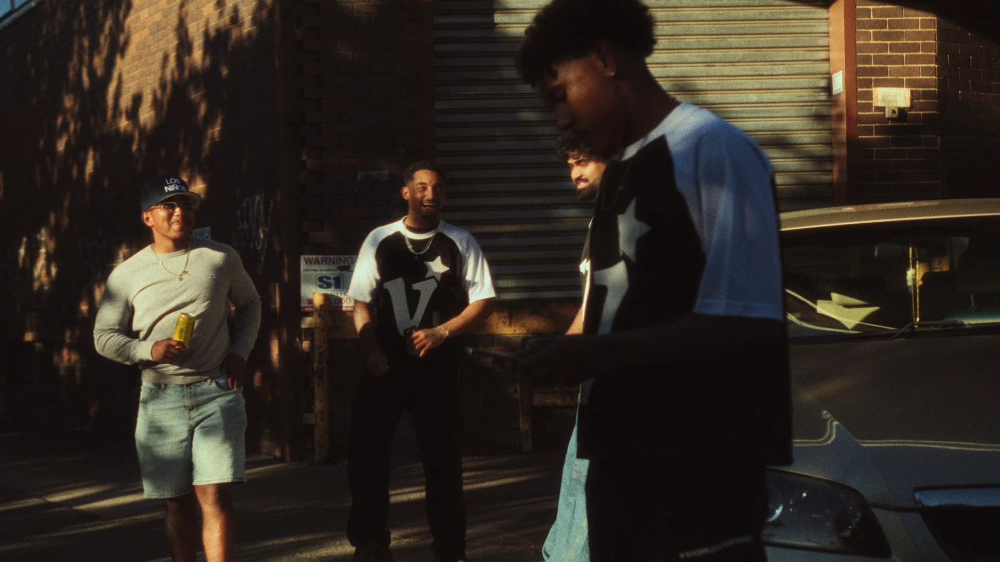
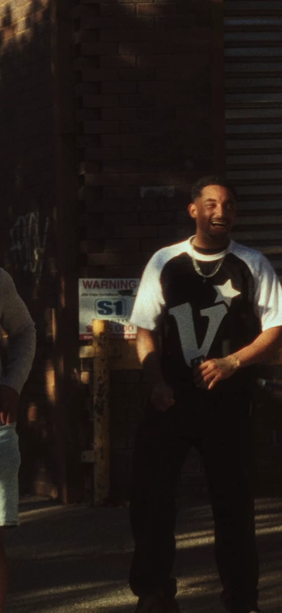

Pick the last frame
The film cuts at five seconds. Pick an earlier smile and it holds through the cut.
C · Starting to turn


The film cuts at five seconds. Pick an earlier smile and it holds through the cut.

